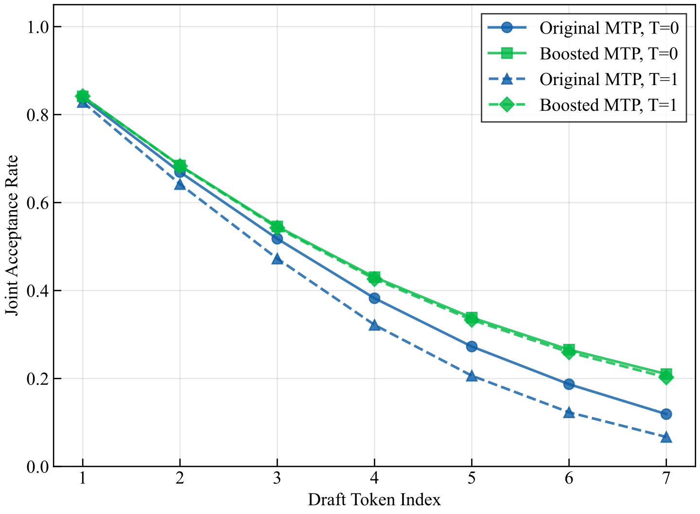
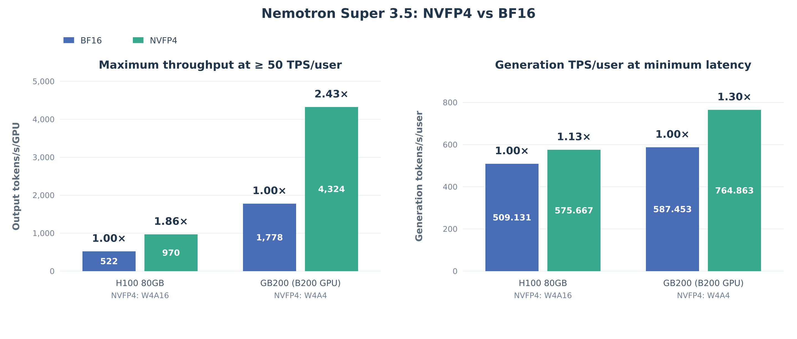
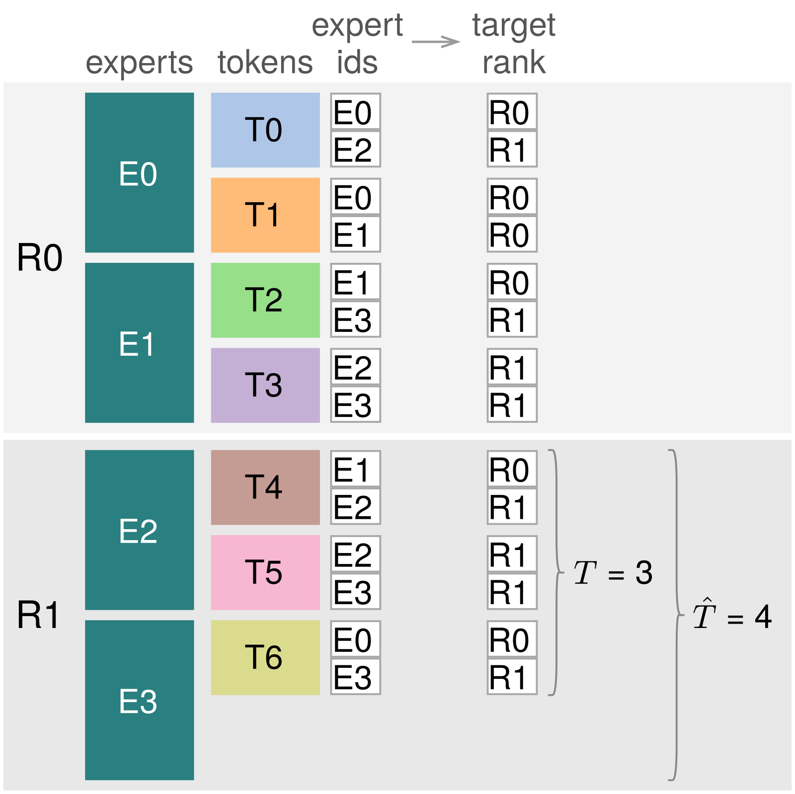
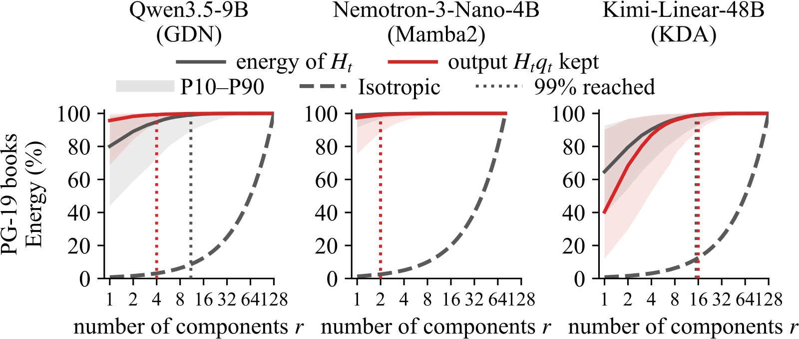
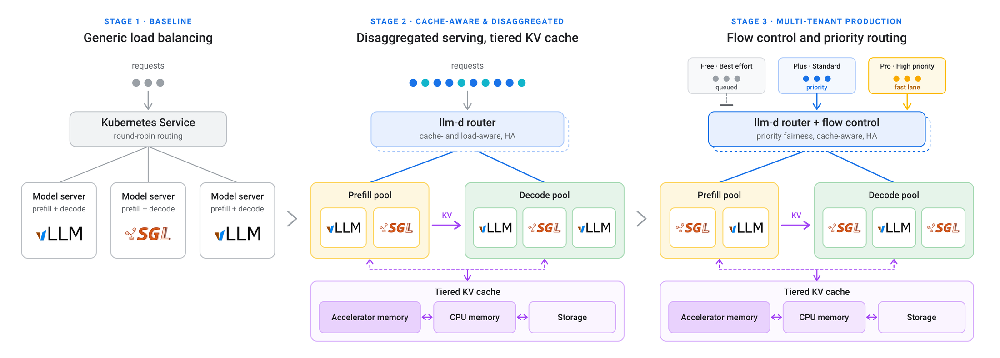
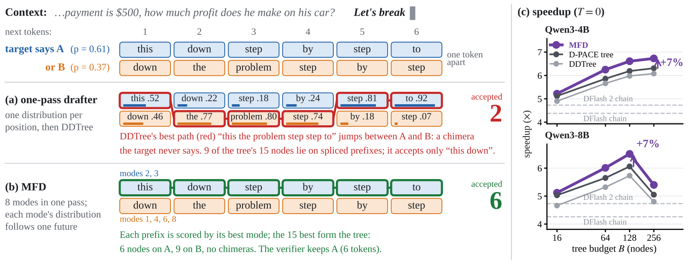

目录 · 9 节
1它到底在解决什么问题？2全景：从训练到上线的几步3MTP 头为什么要在后训练之后再练一遍？44 bit 量化怎么保住精度？5服务端：吞吐从哪来？6主要结果7我认为它的局限8一个推荐/搜索团队可以怎么试9值不值得读开源模型做 agent，能力和推理成本常常只能顾一头。NVIDIA 的 Nemotron 3.5 Super 把两头一起优化：它是 Mamba 和 Transformer 混合的 MoE 模型，每个 token 只激活约十分之一的参数，在 SWE-bench Pro 上拿到 51.78%，超过了激活参数多好几倍的上一代 Ultra。对做推理部署的人更有用的是它的部署设计：模型自带多 token 预测头来做投机解码，后训练里再专门练这个头，平均每步被接受的 token 数比原来的头多出 21.8%（按概率采样草稿时），贪心解码时多出 10.1%。NVFP4 量化后，在交互式 agent 负载上吞吐是 BF16 的 2.43 倍。基座、后训练和量化后的权重连同训练数据一起开放。
这份技术报告很长，涵盖预训练、印度语种数据、多模态和强化学习，但对做推理部署的团队来说，值得细读的是三件可以直接照搬的事：草稿头要在主干练完之后单独再对齐一次；4 bit 量化给不同模块分配不同精度，再用几百步蒸馏补回精度；Mamba 状态在投机解码里怎么少写显存。下面只讲这三件事，模型能力部分一笔带过。
它到底在解决什么问题？
先说这篇里的多 token 预测头（MTP head）怎么用。Nemotron 只有一个 MTP 头，挂在主干最后一层后面，反复调用：每调用一次往后猜一个 token，连调 7 次就是 7 个草稿 token。主干再用一次前向把这几个猜测一起验证，猜对的前几个直接收下，第一个猜错的位置以后全部作废。平均每步收下几个 token，叫接受长度（acceptance length，下文简称 AL）。AL 越大，生成同样多的 token，主干要跑的前向次数越少。
问题出在“错位”上，这里有两层意思。第一层是模型版本的错位：SFT 之后，主干还要经过强化学习和多老师蒸馏，输出分布一直在变。MTP 头在这些阶段虽然跟着一起训练，但这些阶段的目标是提升主干能力，草稿头没有跟上主干的变化。论文表 8 给出了证据：SFT 阶段的模型用它自带的 MTP 头，AL 是 4.589；后训练完成的最终模型用它自带的 MTP 头，AL 降到 4.287（贪心解码）。主干变强了，草稿头反而猜得更差。
第二层是训练和推理的输入错位。MTP 头是递归使用的：猜第 1 个 token 时读主干的隐藏状态，猜第 2 个时读自己第 1 步输出的隐藏状态，依此类推。这个递归共享的写法来自上一代 Super 3 的报告，但 Super 3 本身有两个不共享的头，3.5 只保留第一个；论文没说每一轮里上一轮的隐藏状态、刚猜出的草稿 token 和已验证的前缀具体怎样拼成下一轮的输入。普通训练时，第 k 步读的是第 k−1 步在整段真实文本上算出的隐藏状态，来源整齐划一；推理时情况不同：序列里已经验证过的 token，隐藏状态是主干算的；本轮刚猜出的几个草稿 token，隐藏状态是草稿头自己算的。所以草稿头读到的上下文是两种来源拼在一起的，草稿越往后，自己算的那部分越多。越往后的草稿位置，输入离训练时见过的越远，接受率就掉得越厉害。
用一个示意场景感受一下。一个编程 agent 的一轮回复有 1000 个输出 token，草稿长度是 7（每步猜 7 个）：
| 示意 | 每步平均收下 | 生成 1000 个 token 约需主干前向 |
|---|---|---|
| 没有投机解码 | 1 | 1000 次 |
| 后训练后的原始 MTP 头，采样解码 | 3.787 | 约 264 次 |
| 再对齐后的 MTP 头，采样解码 | 4.612 | 约 217 次 |
表里的 AL 来自论文表 8（温度 1、按概率采样草稿），前向次数是按 1000 除以 AL 估的示意值。一轮少跑四十多次前向，对 20 轮的 agent 会话就是实打实的延迟。
全景：从训练到上线的几步

和部署有关的步骤按时间顺序是这样的：
| 阶段 | 做什么 | 产出 |
|---|---|---|
| MTP 初始化和预热 | 从上一代 Super 3 的两个 MTP 头里只取第一个，改成一个反复使用的头；冻结主干，单练这个头 1000 亿 token | 能递归猜多个 token 的草稿头 |
| 蒸馏和中期训练 | 用大一号的 Ultra 3 做老师蒸馏 1 万亿 token，再补长上下文和软件工程数据 | 基座模型 |
| 后训练 | SFT、RLVR、RLHF、多老师蒸馏 | 最终主干（MTP 头已和它错位） |
| MTP 再对齐（论文叫 MTP boosting） | 冻结主干，只更新 MTP 头 | 和最终主干对齐的草稿头 |
| 量化 | 不同模块分别用 NVFP4 和 FP8，先直接量化，再做 200 步蒸馏补精度 | 4.82 bit 每参数的发布权重 |
| 服务 | vLLM 里的前缀复用、细粒度选内核、Mamba 状态的回放写法 | 上线配置 |
整套设计的分工是：MTP 再对齐决定每步能收下几个 token，量化决定每步读权重要多久，服务端的改动负责让更多请求同时跑。下面拆开讲。
MTP 头为什么要在后训练之后再练一遍？
如果后训练会让草稿头错位，最直接的办法就是后训练结束后再把它对齐一次。论文的做法有三个要点。
第一，主干完全冻结，只更新 MTP 头。这一步不会动模型能力，评测分数不用重跑，风险很小。
第二，训练数据是最终主干自己生成的回复。作者从公开的后训练数据集里取提示词，让主干按温度 1 采样，生成最长 8K token 的回复，损失只算在回复部分。草稿头要猜的就是主干上线后真实会说的话，所以用主干自己的输出来练最合适。
第三，监督信号从“猜对下一个真实 token”换成“贴近主干给出的整个概率分布”，也就是以冻结的主干为老师做蒸馏。论文没说递归第 2 步以后的老师分布，是主干在回复的真实前缀上算的，还是在草稿头递归猜出的前缀上算的。为什么要换监督信号？投机解码在采样模式下用的是拒绝采样：对每个草稿 token，比较主干和草稿头给它的概率来决定收不收，被拒的位置再重新采一个 token 接上。草稿头如果只学会了“最可能的那个词”，分布形状和主干不一样，采样时就容易被拒。论文说这种监督对非贪心采样特别有帮助，表 8 也对得上：温度 1 下的提升（3.787 到 4.612）比贪心下（4.287 到 4.718）大得多。
针对第二层错位，作者沿用了一个叫“隐藏状态混合”的训练技巧。普通的递归训练里，第 k 步的输入全部取自第 k−1 步的输出；论文对这个技巧只给出一句描述：训练第 k 步时，输入的隐藏状态从第 1 到第 k−1 步产生的状态里采样，而不是固定只用第 k−1 步的。论文没说这种采样是按 token 位置逐个做还是整段一起做，也没说主干的隐藏状态是否在候选里。目的很明确：让草稿头在训练时就读到来源不一的隐藏状态，和推理时读到的拼接上下文更像。比起逐步模拟整个推理过程的训练方法（test-time training），这个办法便宜得多。

图 6 说明，收益主要出在后面几个草稿位置，正好是第二层错位最严重的地方。第一个位置读的还是主干的真实隐藏状态，再对齐前后几乎一样。
还有一个省钱的细节。作者先在 SFT 阶段的主干上把 MTP 头练了 4000 步，这次训练很快就收敛了。把这个头直接搬到最终主干上，AL 已经从 3.787 回到 4.436（温度 1），再在最终主干上练 25000 步才到 4.612。也就是说，早练的头大部分收益能带到后面的主干上，后训练结束后只需要补一段较短的训练。
| MTP 头的状态（SPEED-Bench，草稿长度 7） | 贪心 AL | 温度 1 AL |
|---|---|---|
| SFT 主干 + 自带的头 | 4.589 | 4.048 |
| SFT 主干 + 练 4000 步 | 5.080 | 4.730 |
| 最终主干 + 自带的头 | 4.287 | 3.787 |
| 最终主干 + 搬来 SFT 阶段练好的头 | 4.528 | 4.436 |
| 最终主干 + 再练 25000 步 | 4.718 | 4.612 |
4 bit 量化怎么保住精度？
把 120B 的模型压到 NVFP4，最大的问题是不同部分对量化的承受力差很多。作者用 NVIDIA 的 AutoQuant 工具给每个模块估了一个敏感度：量化这个模块会让它的输出偏离原值，把这个偏差按任务损失对该输出的梯度平方加权，偏差大、又落在损失敏感的地方，分就高。结果很不均匀：输出层（lm_head）一个模块就占了 NVFP4 总敏感度的将近一半，注意力和 Mamba 的投影层其次，MoE 专家最耐压。
这正好和参数量的分布反过来：专家占了参数的大头，却最不怕量化。发布版没有直接用敏感度搜索出的配方，而是用作者预先定好的激进配方，它的分层和这份敏感度结果一致：把 MoE 专家和共享专家的矩阵乘压到 NVFP4，注意力投影和 Mamba 线性层用 FP8，输出层保留比 NVFP4 更高的精度。算上量化缩放因子，整个模型平均每个参数 4.82 bit，权重文件约 75 GB。
这里的“保住多少分数”按同一种口径算：每项评测用量化模型的分数除以 BF16 的分数，再取所有评测比值的中位数。量化后精度会掉一些，差距靠 QAD（量化感知蒸馏）补，也就是让量化后的模型再练几百步：只更新语言模型里被量化的矩阵乘权重，其余参数全部冻结，在后训练的 SFT 数据上，用 KL 散度让量化模型的输出分布去贴近量化前的模型。作者发现最佳步数随配方而变：发布用的 4.82 bit 配方 200 步最好，300 步反而略降，所以发布版用 200 步。最终在 36 个评测上，发布的量化模型这个中位数是 99.62%，回答长度平均只多了 0.44%。回答长度是作者特意盯的第二个指标：量化模型如果变得啰嗦，省下的算力会被多出来的 token 吃掉，所以验收标准要求长度增加不超过 5%。
服务端：吞吐从哪来？

论文用的测试负载贴近真实的 agent 会话：先共享一段 5 万 token 左右的前缀，再来 20 轮对话，每轮输入 2K、输出 1K。它只统计每个用户每秒至少 50 个输出 token 的配置，太慢的点即使总吞吐高也不算。
作者把吞吐优势归到三点。第一，模型只有少数几层注意力，其余层用 Mamba-2，Mamba 的状态大小固定，不随上下文变长，所以 agent 会话越拉越长时，每个请求占的显存涨得很慢，一张卡能同时放更多请求，大家分摊每次读权重的开销。第二，MTP 头的 AL 高，每次前向收下更多 token。第三，模型用的 LatentMoE 结构在把 token 发给各个专家时，发的是比隐藏状态更小的压缩向量，所以多卡做专家并行时，每个 token 要跨卡传的数据更少。
Mamba 也带来一个投机解码特有的麻烦。Mamba 层每来一个 token，就要把固定大小的状态更新一次：新状态 = 衰减系数 × 旧状态 + 这个 token 的 key 和 value 的外积。投机解码一次验证 7 个草稿 token，事先不知道会收下几个，只好把每种可能的新状态都写回显存。草稿越长，写的越多，这一步完全卡在显存带宽上，还限制了能同时跑多少请求。
作者的办法是“检查点加回放”（这个方法与 Dao 实验室的 ReplaySSM 是同时独立做出来的）。显存里只存一份某个时刻的状态（检查点），之后每个 token 只把很小的 key、value 和衰减系数记进一个缓冲区。验证一批草稿时，每个位置的输出不必先把状态写出来：输出分两部分相加。一部分是查询向量乘检查点状态，再乘上检查点之后每一步衰减系数的连乘；另一部分来自缓冲区里的每条记录：查询向量和这条记录的 key 做点积得到一个权重，用它乘这条记录的 value，再乘上这条记录之后各步衰减系数的连乘。这和先把状态按递推式算出来、再乘查询向量，结果相同；真要完整状态时，也能当场用检查点和这些记录重建。验证完，缓冲区里只留被收下的 token，被拒的草稿只要把计数器往回拨，下一批草稿接着往同一个缓冲区追加。缓冲区存满（论文实验用 16 步），才把状态真正算出来、写回显存一次，当作新的检查点。这样一来，原来每次验证都要把 T 份可能的新状态写回显存（T 是草稿长度），现在要等缓冲区攒满若干 token 才写回一次，和状态有关的显存流量大幅下降，省下的显存还能让更多请求、更长的草稿同时跑。在单张 GB200 上，打开这个方法让总吞吐提高 4.7% 到 6.4%，单用户速度提高 6.4% 到 12.5%。 Hoot 说

这篇论文的贡献之一是让 Mamba 层的投机解码不再卡在显存写入上。Mamba 每来一个 token：新状态 = 衰减系数 × 旧状态 + 这个 token 的 key 和 value 的外积。数字都是示意。
出处
示意例子，对应论文 §5 检查点加回放主要结果
| 项目 | 对照 | 结果 |
|---|---|---|
| SWE-bench Pro | 激活参数约多 4.6 倍的 Nemotron 3 Ultra | 51.78%，超过 Ultra |
| MTP 平均 AL（温度 1） | 后训练后的原始头 3.787 | 再对齐后 4.612，多 21.8% |
| MTP 平均 AL（贪心） | 后训练后的原始头 4.287 | 再对齐后 4.718，多 10.1% |
| 量化精度保持 | BF16，36 个评测 | 中位数 99.62%，回答长度多 0.44% |
| 吞吐（GB200，至少 50 token 每秒每用户） | BF16 每卡 1778 token/s | NVFP4 每卡 4324 token/s，2.43 倍 |
| 吞吐（同负载） | Qwen3.5 122B-A10B | 2.34 倍 |
这些数字合起来说明，速度优势不是来自某一个技巧，而是模型结构、草稿头、量化和服务端四层各贡献一块。其中 MTP 再对齐和 QAD 的成本最低：都冻结了大部分参数，只练几百到几万步。
我认为它的局限
第一，草稿头的优势只在采样解码下成立。论文表 9 里，贪心解码时 Gemma-4 31B 的平均 AL 是 4.837，Qwen3.5 122B-A10B 是 4.799，都比再对齐后的 Nemotron（4.718）高；只有在温度 1 时 Nemotron 才领先，4.612 对 Gemma 的 4.565 和 Qwen3.5 的 4.331。这说明如果线上用贪心解码，再对齐本身仍有收益，但相对这两个模型的领先就没有了。
第二，2.43 倍只在 Blackwell 显卡上拿得到。它依赖 W4A4，而 H100 只能跑 W4A16，同样的对比只有 1.86 倍，所以手上主要是 Hopper 显卡的团队，拿不到这么大的收益。发布的检查点用的也是 FP8 的 KV cache，KV cache 并没有压到 4 bit。
第三，量化的搜索成本不低。每个候选配方跑 100 步 QAD 约要 1024 个 GB200 GPU 小时，作者比较了三套配方、多个步数才选出发布版。小团队照搬时最好直接用发布的配方，不要重新搜。
一个推荐/搜索团队可以怎么试
做搜索或推荐的团队如果在线上用大模型做 query 改写、生成式召回或对话式推荐，可以按下面几步试：
- 先量一下自己的 AL。拿上线流量，分别测原始模型和你们自己微调后的模型配同一个草稿头时的 AL。如果微调后明显下降，就说明遇到了本文说的第一层错位。
- 只练草稿头。冻结主干，用微调后的模型对真实提示词按线上温度采样，生成回复，再以主干的输出分布为目标练草稿头。成功的标志是 AL 回升，同时主干的离线指标一点不变。
- 量化先看各部分的敏感度，再核对精度分配。先单独量化输出层、注意力层和 MoE 专家，看哪一块掉分最多，把高精度留给它；如果是 Blackwell 显卡，再试 4 bit 激活。验收时除了分数，还要看回答长度有没有变长。
- 长会话负载上看吞吐。按真实的多轮会话长度压测，只统计满足单用户速度下限的配置，避免被高并发下的总吞吐误导。
值不值得读
一句话：对已经在线上跑投机解码的团队，后训练之后单独对齐草稿头是最便宜、最该先做的一步。
| 维度 | 评价 |
|---|---|
| 问题重要性 | 高。agent 会话长、输出多，每步多收下几个 token 直接决定延迟和成本 |
| 方法创新性 | 中。单项技术大多来自前作，贡献在于把草稿头再对齐、分层量化和 Mamba 状态回放组合起来并给出完整数据 |
| 实验证据 | 中高。AL、量化、吞吐都有对照，但吞吐对比只在 NVIDIA 自己的负载和硬件上做 |
| 工程成本 | 草稿头再对齐低，主干冻结；量化搜索高，每个候选的 QAD 要上千 GPU 小时 |
| 是否值得尝试 | 值得。草稿头再对齐和分模块分配量化精度两步可以单独拿来用，不依赖 Nemotron 的结构 |
读完这篇，你觉得
夜读鸮记下了，谢谢你的反馈。
点一下即可，无需登录；再点一次撤回。只统计匿名次数，不记录你是谁。
相关论文RELATED

Infra · 2026-11-12One-Sided Expert-Parallel All-to-All for Mixture-of-Experts Inference over NVLinkMoE 推理时每一层都要做两次 all-to-all：先把 token 发到持有对应专家的 GPU，再把专家的输出收回来。推理时每张卡一次只处理很少的 token，这时耗时的不是搬数据，而是 GPU 之间互相等待、同步这类固定开销：数据量小到在 NVLink 上几乎瞬间传完，一来一回却要几十微秒。NVLinkOneSided 让每张卡只凭自己的路由结果，直接把 token 写进目标卡上专门留给它的那块缓冲区，不用先交换 token 数量之类的信息；后面的分组 GEMM 也直接从这块缓冲区读，不再按专家重新复制一遍。在 Blackwell GPU 上，发送加回收比 DeepEP 快 1.2 到 3.0 倍，batch 越小优势越大。整层 MoE 在每卡 128 个 token 以内，比融合成一个 kernel 的 DeepGEMM MegaMoE 还快。小 batch 的 decode 通… Infra · 2026-11-03HiState: Hierarchical Prefix Cache Management for Hybrid LLM Serving in Agentic Workloads混合模型的循环层会把整段前缀压成一个固定大小的快照，没法截短回更早的位置。所以 KV 明明还在，只要匹配位置的快照没存过或已被淘汰，就要从更早的快照甚至从头重算一大段。HiState 抓住一个不对称：一次缓存命中要读所有匹配的 KV，却只读一个快照，而且快照大小和上下文长度无关。所以它把大量历史快照放到 SSD，把内存留给 KV，并把快照和 KV 放进同一个淘汰队列。队列里每一项的分数是最近访问时间，加上删掉它后要多重算的 token 数除以它能腾出的空间，分数最低的先删。在两份公开的编程 agent 请求记录上，p99 TTFT 相对基于 vLLM 的 Marconi 最多加速 5.73 倍。快照多存不占快内存，每次命中也只从慢存储读一个。
Infra · 2026-11-03HiState: Hierarchical Prefix Cache Management for Hybrid LLM Serving in Agentic Workloads混合模型的循环层会把整段前缀压成一个固定大小的快照，没法截短回更早的位置。所以 KV 明明还在，只要匹配位置的快照没存过或已被淘汰，就要从更早的快照甚至从头重算一大段。HiState 抓住一个不对称：一次缓存命中要读所有匹配的 KV，却只读一个快照，而且快照大小和上下文长度无关。所以它把大量历史快照放到 SSD，把内存留给 KV，并把快照和 KV 放进同一个淘汰队列。队列里每一项的分数是最近访问时间，加上删掉它后要多重算的 token 数除以它能腾出的空间，分数最低的先删。在两份公开的编程 agent 请求记录上，p99 TTFT 相对基于 vLLM 的 Marconi 最多加速 5.73 倍。快照多存不占快内存，每次命中也只从慢存储读一个。
Infra · 2026-11-13SinkState: On-the-Fly SVD of Recurrent States for Efficient Hybrid LLM Serving混合模型里的线性注意力层把历史压进一个固定大小的状态矩阵，解码时每一步都要把它整块读出再写回。batch 一大，这部分显存读写就占了解码时间的大头。作者发现这些状态其实是低秩的：线性层每一步写进和读出状态的向量集中在一个很小、而且不随内容变化的子空间里，少数几个分量就能还原 99% 的状态。SinkState 让每个状态在推理全程以低秩形式存放，新来的更新先攒几步，再只在头部几个分量上做小规模 SVD，其余部分交给 CPU 异步合并。在四个混合模型上，状态显存峰值最多降 2.6 倍，解码最多快 1.58 倍，精度基本不变。线性注意力的状态还有很多冗余可以压，用混合模型做长序列服务时，省下的显存能直接换成更大的 batch。
Infra · 2026-10-24llm-d 1.0, an open source stack for distributed inference现在越来越多的推理请求来自多步智能体和强化学习的 rollout，它们会共享很长的前缀、成批突发到达。把这类流量放在普通的轮询负载均衡后面，各个副本会重复计算同样的提示，显存里堆满重复的 KV cache。llm-d 1.0 是一个跑在 Kubernetes 上的开源分布式推理栈，它把一组模型服务器组织成一个统一的服务池。路由器知道每段缓存前缀在哪些副本上，会把同一会话的请求送回去；显存不够时，KV cache 会被挪到主机内存和存储。在 Ironwood TPU 的编码智能体负载上，首 token 延迟中位数下降 85% 以上，总吞吐是普通 Kubernetes Service 的 2.4 倍。这些收益大多不靠更快的算子，靠的是不再重复计算已经算过的前缀。
Infra · 2026-11-13Multi-Future Drafting: Mixture Block Drafters for Tree-Verified Speculative Decoding投机解码里，一次前向就起草一整块 token 的草稿模型很快，但它给每个位置单独一个分布。后文有两种同样合理的措辞时，按各位置概率连乘排出的草稿树会把两种说法拼成目标模型根本不会说的句子。作者证明，这类树想同时放下两种说法，就必须给它们的拼接也分预算，草稿模型训得再好也绕不开，因为连乘本身表达不了位置之间的关联。实测 64 个节点的树里约三成节点是这种拼接。MFD 在草稿模型输入端加 K 个可学习的模式向量，同一次前向里并行起草 K 条各自连贯的续写，再合成一棵树交给目标模型验证，输出分布不变。在四个 Qwen 目标模型上，它比同样训练的单模式树快 5% 到 8%。
讨论
欢迎补充实验细节、复现经验或不同看法。需 GitHub 登录。
正在加载讨论…